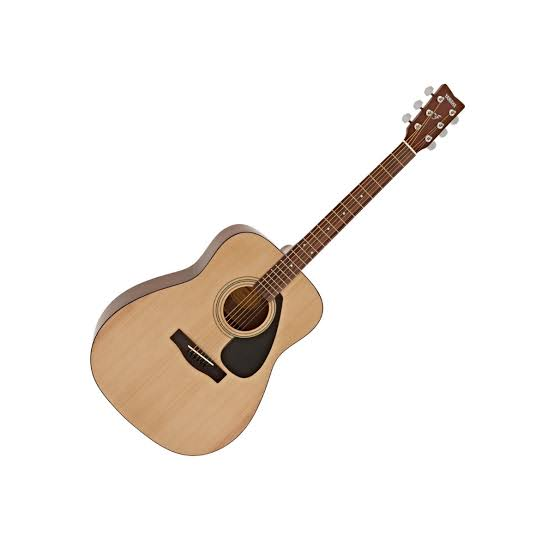
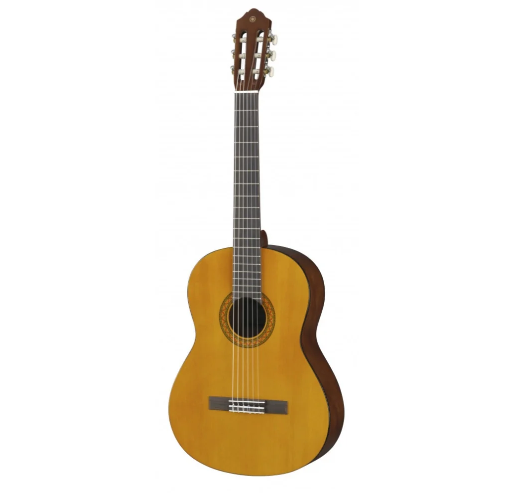
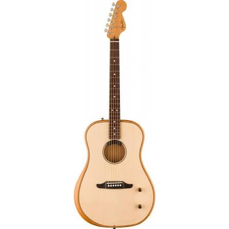
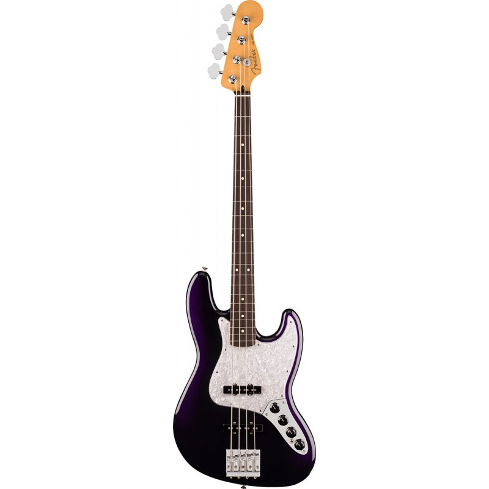
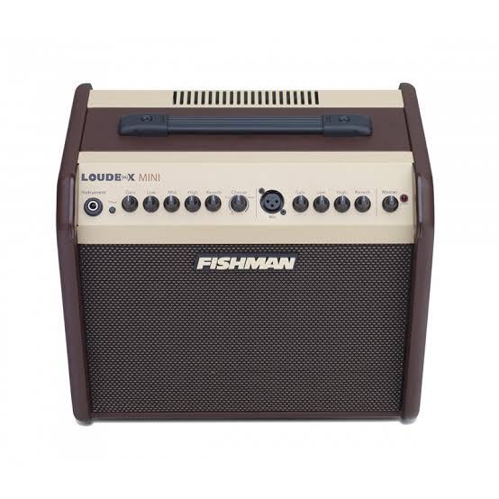
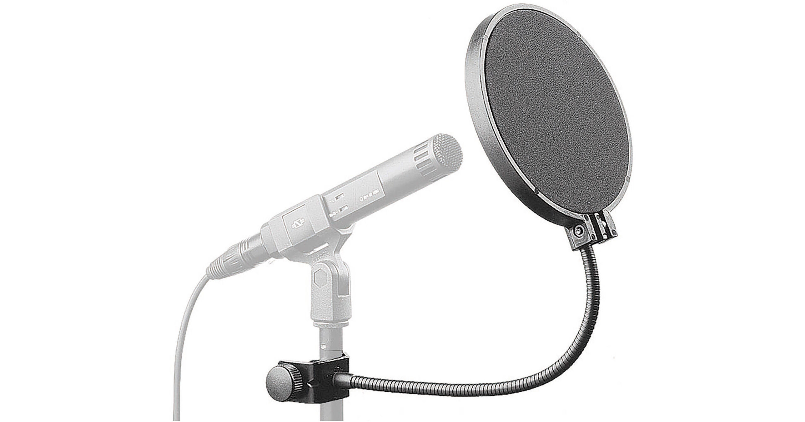
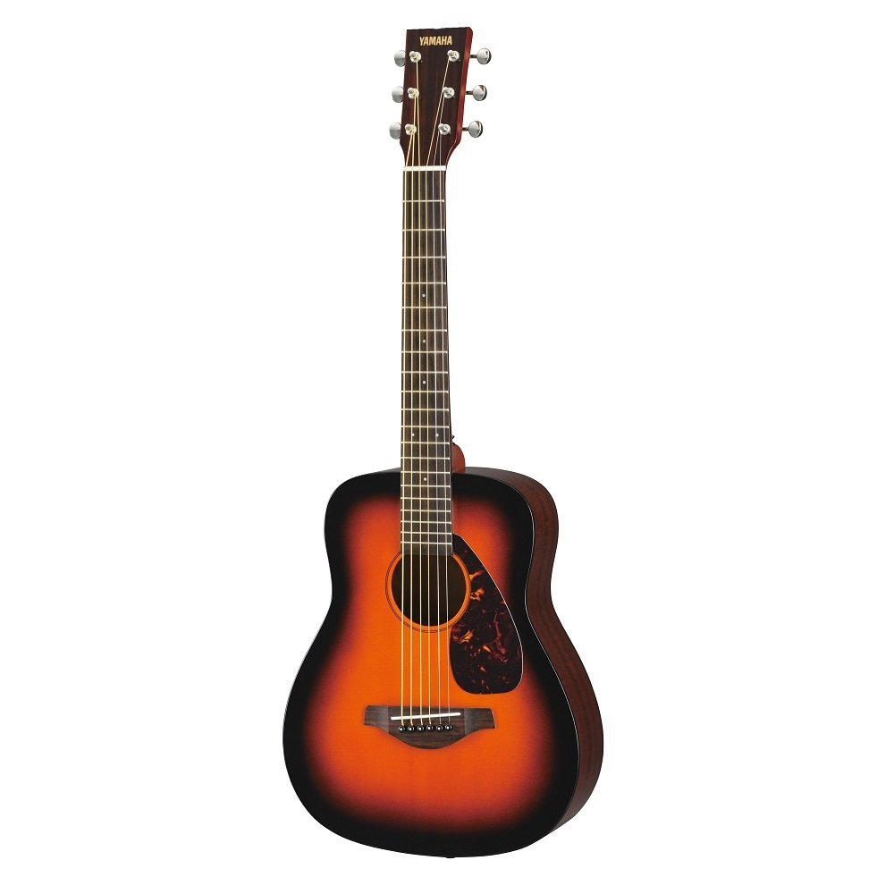
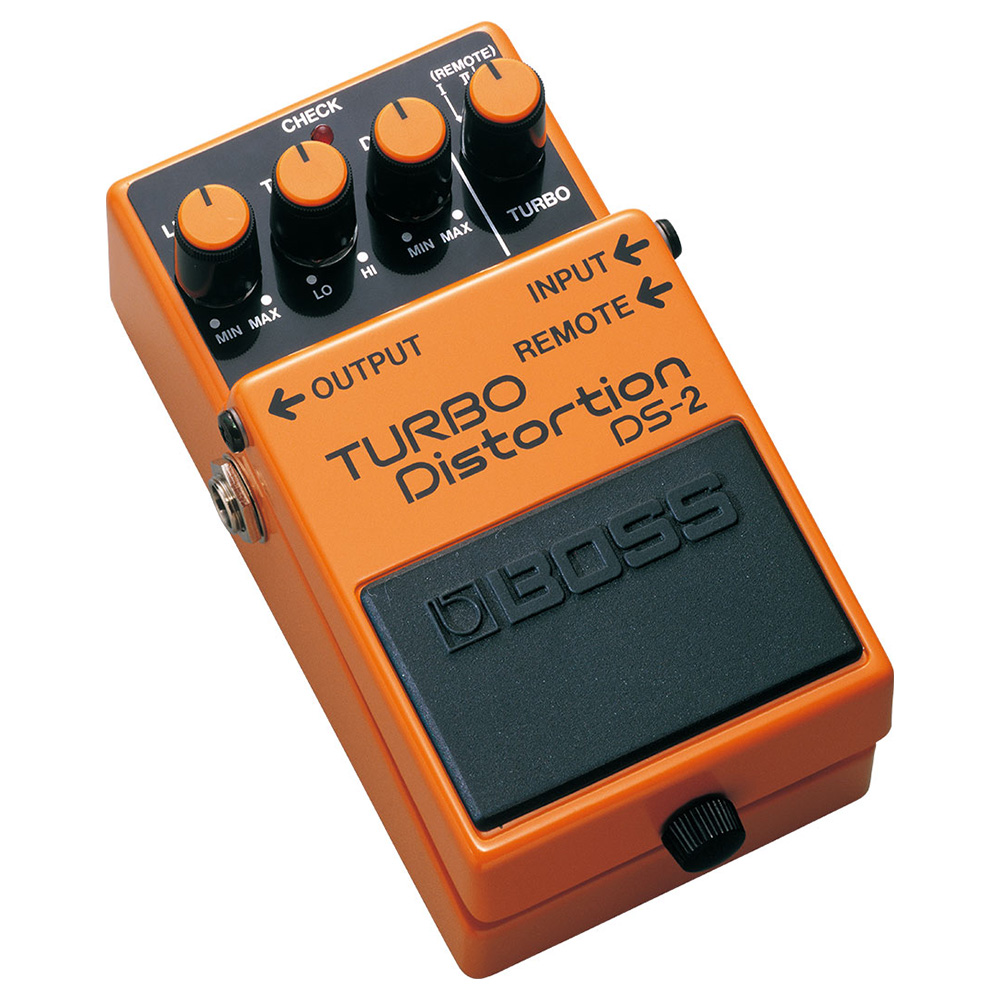
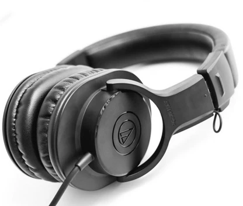
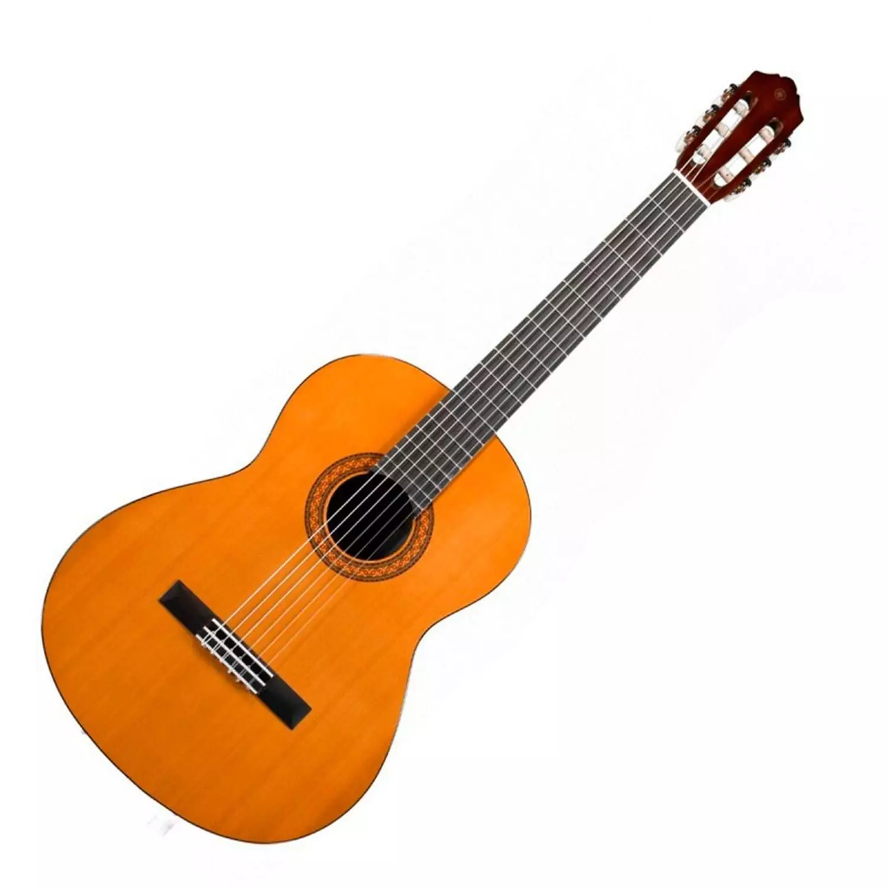

Guitarra Acústica Folk
Yamaha
Tapa de abeto macizo. Sonido cálido.
Stock: 8

Yamaha
Tapa de abeto macizo. Sonido cálido.
Stock: 8
$129.990

Yamaha
Nailon, ideal para estudio.
Stock: 10
$89.990

Fender
Tapa de abeto macizo, brazo de caoba. Sonido cálido y proyectado.
Stock: 5
$189.990

Fender
Alder body, 2 Alnico V Jazz single-coil.
Stock: 2
$699.990

Fishman - Loudbox Mini
60W, 2 canales, reverb y chorus incorporados.
Stock: 2
$499.990

Sennheiser - MZP 40
Doble malla, brazo flexible con clip.
Stock: 8
$14.990

Yamaha - JR1
Tamaño reducido para niños de 6 a 10 años.
Stock: 6
$79.990

Boss - DS-1
Clásico pedal de distorsión, 3 controles.
Stock: 7
$79.990

Audio-Tech. - ATH-M20x
Circumaurales, respuesta 15Hz-20kHz.
Stock: 6
$79.990

Yamaha - C40
Nailon, tapa de abeto. Ideal para estudio y flamenco.
Stock: 10
$89.990